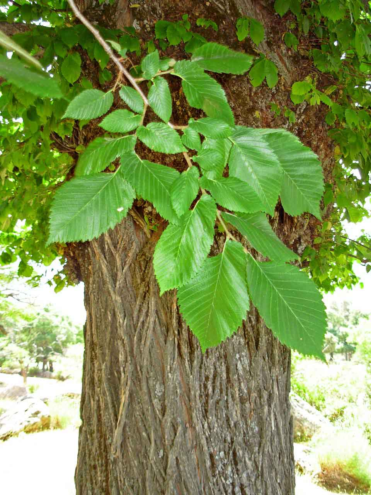

Ayuntamiento de Senés
JARDIN BOTANICO DE ESPECIES AUTOCTONAS DE SENES

Ulmus minor

El olmo (Ulmus minor) es un árbol caducifolio característico de zonas templadas y mediterráneas, muy valorado por su porte majestuoso y su amplia copa. Tradicionalmente ha sido un árbol emblemático en plazas y caminos.
Presenta un tronco robusto y una copa amplia que proporciona abundante sombra. Sus hojas son ovaladas, asimétricas en la base y con borde dentado. Produce pequeños frutos alados llamados sámaras.
El olmo se distribuye por Europa y regiones mediterráneas, creciendo en zonas de ribera, campos y áreas con cierta humedad.
En el entorno de Senés, se encuentra en zonas más frescas, tradicionalmente cerca de fuentes o espacios habitados.
La madera del olmo es resistente y flexible, utilizada históricamente en carpintería y fabricación de herramientas.
También se le han atribuido propiedades medicinales a su corteza en la medicina tradicional.
El olmo simboliza la protección y la comunidad, al ser tradicionalmente plantado en plazas como lugar de reunión.
Representa la vida social y la historia de los pueblos.
En Senés, el olmo ha sido utilizado como árbol de sombra en espacios públicos y zonas de paso.
También ha tenido usos en carpintería gracias a la calidad de su madera.
El olmo florece a finales del invierno o principios de la primavera, antes de la aparición de las hojas.
Muchos olmos han sido afectados por la grafiosis, una enfermedad que ha reducido notablemente sus poblaciones.
A pesar de ello, sigue siendo un árbol muy representativo del paisaje tradicional.